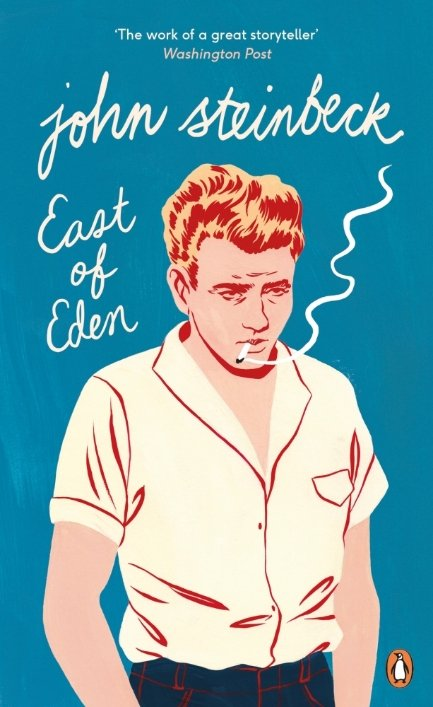

Grapes of Wrath
Set during the Great Depression, the novel focuses on the Joads, a poor family of tenant farmers
driven from their Oklahoma home by drought, economic hardship, agricultural industry changes, and
bank foreclosures forcing tenant farmers out of work.

Of Mice and Men
Published in 1937, it narrates the experiences of George Milton and Lennie Small, two displaced
migrant ranch workers, who move from place to place in California in search of new job opportunities
during the Great Depression in the United States.

East of Eden
East of Eden brings to life the intricate details of two families, the Trasks and the Hamiltons, and
their interwoven stories. The Hamilton family in the novel is said to be based on the real-life
family of Samuel Hamilton, Steinbeck's maternal grandfather.